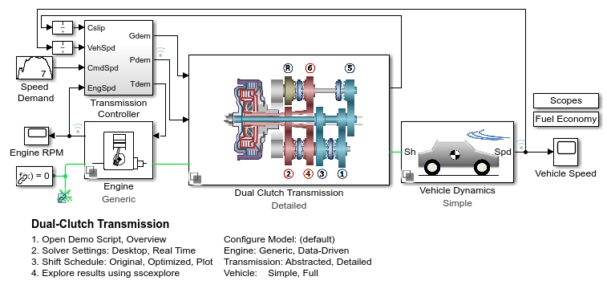
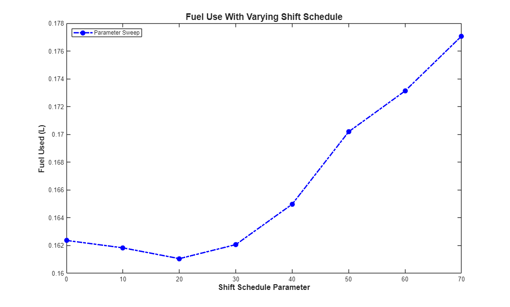

Dual Clutch Transmission - Parameter Sweep, 1 Parameter, Parallel Computing
This example shows a vehicle with a five-speed automatic dual-clutch transmission. The transmission controller converts the pedal deflection into a demanded torque. This demanded torque is then passed to the engine management. The pedal deflection and the vehicle speed are also used by the transmission controller to determine when the gear shifts should occur. Gear shifts are implemented via the two clutches, one clutch pressure being ramped up as the other clutch pressure is ramped down. Gear pre-selection via dog clutches ensures that the correct gear is fully selected before the on-going clutch is enabled.
The script below uses varies the shift map to see the impact on fuel economy. The shift map is parameterized with 1 parameter to limit the design space.
Contents
Model
Run Parameter Sweep
[22-Dec-2025 19:06:33] Checking for availability of parallel pool... Starting parallel pool (parpool) using the 'Processes' profile ... Connected to parallel pool with 4 workers. [22-Dec-2025 19:06:53] Starting Simulink on parallel workers... [22-Dec-2025 19:06:59] Configuring simulation cache folder on parallel workers... [22-Dec-2025 19:06:59] Transferring base workspace variables used in the model to parallel workers... [22-Dec-2025 19:06:59] Total size of base workspace variables to send to parallel workers is 4.60 MB. [22-Dec-2025 19:07:00] Loading model on parallel workers... [22-Dec-2025 19:07:11] Running simulations... [22-Dec-2025 19:07:46] Completed 1 of 8 simulation runs [22-Dec-2025 19:07:46] Received simulation output (size: 1.08 MB) for run 1 from parallel worker. [22-Dec-2025 19:07:46] Completed 2 of 8 simulation runs [22-Dec-2025 19:07:46] Received simulation output (size: 1.15 MB) for run 4 from parallel worker. [22-Dec-2025 19:07:46] Completed 3 of 8 simulation runs [22-Dec-2025 19:07:46] Received simulation output (size: 1.13 MB) for run 2 from parallel worker. [22-Dec-2025 19:07:46] Completed 4 of 8 simulation runs [22-Dec-2025 19:07:46] Received simulation output (size: 1.14 MB) for run 3 from parallel worker. [22-Dec-2025 19:07:57] Completed 5 of 8 simulation runs [22-Dec-2025 19:07:57] Received simulation output (size: 1.21 MB) for run 5 from parallel worker. [22-Dec-2025 19:07:57] Completed 6 of 8 simulation runs [22-Dec-2025 19:07:57] Received simulation output (size: 1.21 MB) for run 7 from parallel worker. [22-Dec-2025 19:07:57] Completed 7 of 8 simulation runs [22-Dec-2025 19:07:57] Received simulation output (size: 1.22 MB) for run 6 from parallel worker. [22-Dec-2025 19:07:57] Completed 8 of 8 simulation runs [22-Dec-2025 19:07:57] Received simulation output (size: 1.22 MB) for run 8 from parallel worker. [22-Dec-2025 19:07:57] Cleaning up parallel workers... Parallel pool using the 'Processes' profile is shutting down.